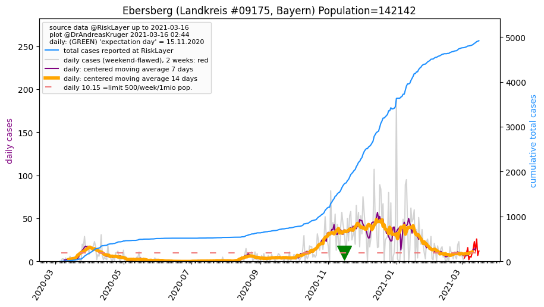
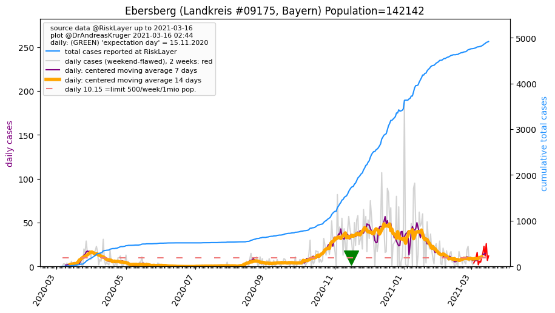

")
")
")
")
")
")
")
")

")
")
")
| Starnberg_LK (0.0 km) |
Fürstenfeldbruck_LK (21.1 km) |
Landsberg am Lech_LK (24.9 km) |
| München_KS (25.7 km) |
München_LK (27.2 km) |
Weilheim-Schongau_LK (29.9 km) |
| Bad Tölz-Wolfratshausen_LK (34.4 km) |
Dachau_LK (37.0 km) |
Ebersberg_LK (47.7 km)  |
| Augsburg_KS (47.9 km) |
Miesbach_LK (49.2 km) |
Aichach-Friedberg_LK (49.9 km) |
All plots are regenerated with new data every night. Beware this temporary hotspot is an experimental page - it might get removed, so please do not link to it. Instead link to project http://tiny.cc/cov19de.